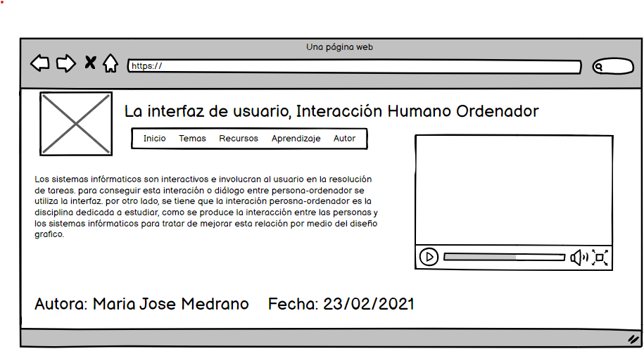

Interfaz de usuario, interacción Humano Ordenador
Los sistemas infórmaticos son interactivos e involucran al usuario en la resolución de tareas.
para conseguir esta interación o diálogo entre persona-ordenador se utiliza la interfaz.
por otro lado, se tiene que la interación perosna-ordenador es la disciplina dedicada a estudiar,
como se produce la interacción entre las personas y los sistemas infórmaticos para tratar de mejorar
esta relación por medio del diseño grafico.
Referencia APA
urriculla, C.-C. j. (1991). ACM SIGCHI Curriculla for Human-Computer Interaction.
Ferraté, G. ( 1998). Libro AIPO. La universidad en el cambio de siglo. Alianza Editorial.
Preece, J. ( (1994)). Human Computer Interaction. Addison and Wesley. 